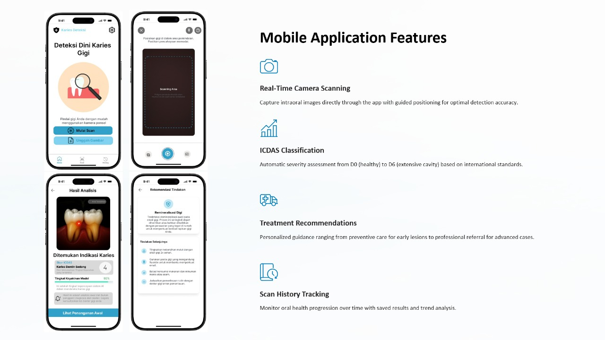

Mobile App · AI
Dentalogic8
Aplikasi mobile untuk mendeteksi karies gigi dan memberi rekomendasi treatment bagi pengguna underserved.
Tech stack: React Native, YOLOv12, Python, Optuna, GitHub
🌷Looking for Real-World Experience
An Information Technology student who is passionate about software engineer, UI/UX, and human-centered digital product development. Enjoys learning new technologies and contributing to teams.
Sedikit cerita tentang latar belakang dan fokus belajarku.
Halo! Saya mahasiswa Teknologi Informasi dengan minat pada Software Engineering dan UI/UX Design. Saya menikmati proses merancang, membangun, dan mengoptimalkan antarmuka yang fungsional serta user-friendly.
Saat ini saya mencari pengalaman magang atau entry-level position di bidang software development atau frontend engineering untuk memperdalam kemampuan teknis dan berkontribusi dalam pengembangan produk.
20 tahun
Institut Teknologi DEL
Frontend Development, UI/UX Design, Backend Basics, Database
HTML, CSS, JavaScript, PHP (Laravel), Java (Basic), SQL, MySQL, Wireframe, Prototype
Teknologi yang sering saya gunakan dalam pengembangan software dan desain antarmuka.
HTML
CSS
JavaScript
SQL / MySQL
Python
Java
Laravel
Git & GitHub
Figma (UI/UX)
PHP
Vscode
Postman
Ringkasan singkat project yang pernah saya kerjakan.
Aplikasi mobile untuk mendeteksi karies gigi dan memberi rekomendasi treatment bagi pengguna underserved.
Tech stack: React Native, YOLOv12, Python, Optuna, GitHub
Platform layanan kesehatan untuk mempermudah pasien dan admin Puskesmas mengelola layanan dan data.
Tech stack: Flutter (Dart), Laravel (PHP), Blade, SQL, GitHub
Sistem informasi gereja untuk mengelola data jemaat, kegiatan, dan informasi pelayanan.
Tech stack: Laravel, PHP, SQL, JavaScript, Blade, CSS/SCSS, GitHub
Redesign UI/UX e-marketplace Rumah Kreatif Toba untuk alur belanja yang lebih jelas dan nyaman.
Tech stack: Figma, UX Research, Heuristic Evaluation, SUS
Aplikasi untuk membantu mahasiswa IT Del memprediksi dan memonitor nilai mata kuliah.
Web app untuk mendeteksi gambar deepfake menggunakan model ResNet-18 dan visualisasi heatmap Grad-CAM.
Tech stack: Python, PyTorch, ResNet-18, Grad-CAM, Streamlit
Pengalaman organisasi, kepanitiaan, dan peran akademik yang pernah saya jalani.
DEPKOMINFO – BEM IT Del
Mengelola penyebaran informasi kampus dan media sosial BEM IT Del: merencanakan konten, menulis caption, dan menjadwalkan publikasi agar informasi tetap akurat dan mudah diakses.
Institut Teknologi Del
Membantu proses pembelajaran 59 mahasiswa, menjelaskan materi grammar, menjawab pertanyaan, serta mengoreksi tugas dan kuis.
Infinite Learning x Apple Developer Academy — Batam
Mengembangkan solusi berbasis teknologi dengan pendekatan design thinking, menyusun alur aplikasi, logika, dan prototype antarmuka menggunakan Swift.
SMAN 1 Siborongborong
Memimpin OSIS dalam merencanakan dan menjalankan program kerja sekolah serta mengoordinasikan pengurus untuk kegiatan akademik dan non-akademik.
Institut Teknologi Del
PIC kelompok, mengoordinasikan anggota dan memastikan rangkaian kegiatan kaderisasi berjalan tertib dan tepat waktu.
Institut Teknologi Del
Mendokumentasikan acara melalui foto dan video serta menyiapkan materi dokumentasi untuk kebutuhan publikasi.
Institut Teknologi Del
Menulis dan mempublikasikan berita di del.ac.id serta mendukung peliputan langsung melalui radio dan media sosial bersama tim publikasi.
Riwayat pendidikan formal yang pernah dan sedang ditempuh.
Institut Teknologi Del
GPA: 3.37 / 4.00
Menempuh pendidikan pada bidang Teknologi Informasi dengan fokus pada
pengembangan aplikasi, pemrograman, basis data, dan analisis sistem.
SMA Negeri 1 Siborongborong
Ketua OSIS (Student Body President).
Aktif dalam kegiatan akademik dan kepemimpinan selama masa sekolah.
Yuk terhubung untuk kolaborasi project, magang, atau sekadar networking manis-manis dulu 🌷
Aku terbuka untuk kesempatan internship, part-time project, dan kolaborasi belajar. Ceritakan kebutuhanmu, nanti kita cari solusi bareng 💌
Lebih nyaman via email atau form di samping ya, saya pasti balas secepat mungkin 💗